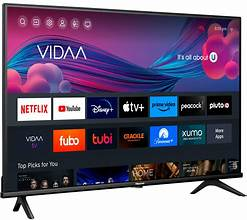
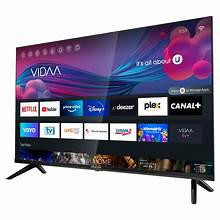
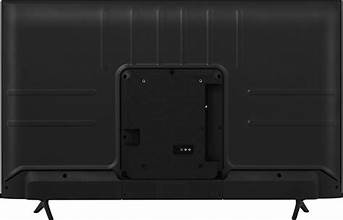
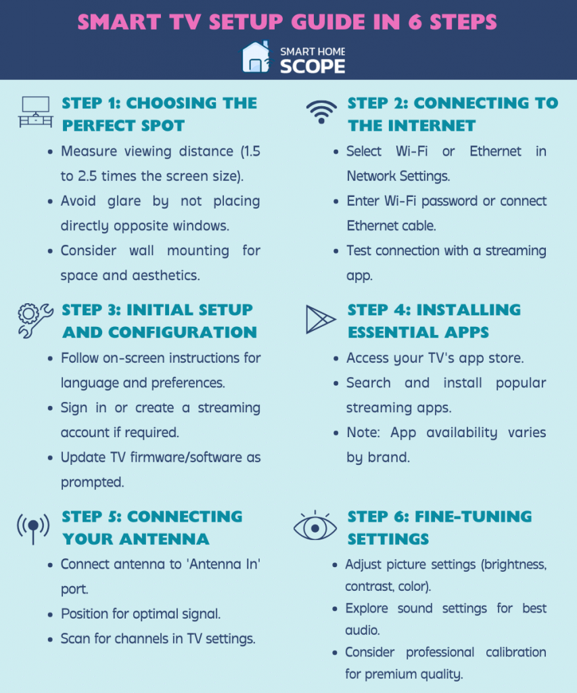

This image shows the front view of a smart television displaying various streaming applications. The TV provides high-quality video, internet connectivity, and access to entertainment platforms. Users can enjoy movies, shows, and online content with ease. The large screen enhances the viewing experience.
This image presents the television from an angled perspective. The slim design and modern display technology make it suitable for home entertainment and multimedia viewing. Its stylish appearance complements modern interiors. The display offers bright colors and sharp image quality.
This image shows the rear side of the television. The back panel contains ports for HDMI, USB, power, and other connectivity options used to connect external devices. These ports increase the functionality of the television. They allow users to connect gaming consoles and media devices.
This image displays the setup and operating instructions for the television. The guide helps users install, configure, and operate the TV efficiently. It includes important safety and troubleshooting information. Following the guide ensures proper usage and maintenance.